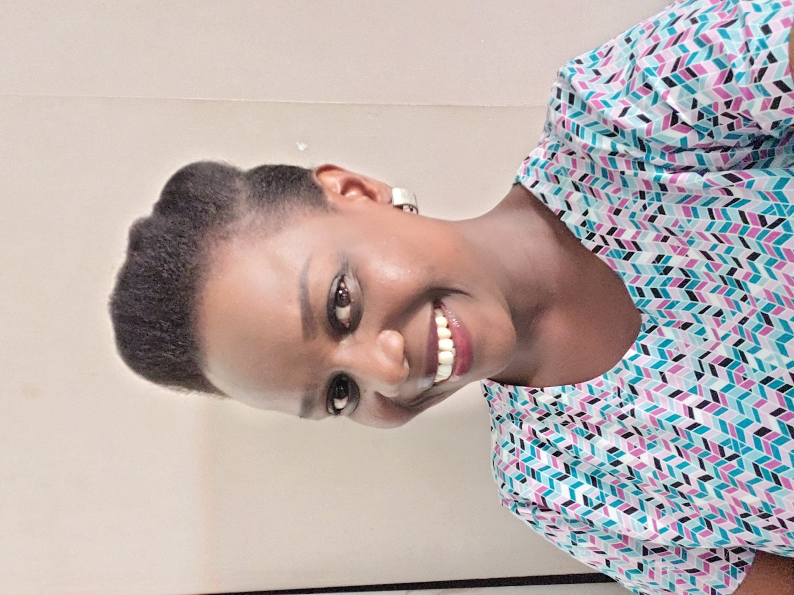

I write books and love
to build websites

About
Hi, I am Juliana, but I love it when you call me Jay.
I'm an author, children stories ghost writer
and content writer with 3 year's experience.
I am multi-talented, as I can work with Canva
apps, make shoes but one thing I can do very well
is write.
I am very passionate about women and children,
hence my reason for writing for these set of
species.
Just a few months of learning Web
development, I am able to work with HTML, CSS and
JavaScript in creating simple website just like
this one you are seeing, voila!
Though, I keep learning on how to horn my skills as a web developer, I also read a lot of books to gain insight into other people's mind and concept about life. This also made me know more about what people are going through.
While I love writing generally and writing codes, I love to challenge myself by learning and doing things
that in few years will cause me to smile. One of the strengths I have as a woman is meeting deadlines, I have never had experience of not smashing my deadlines, no matter what work it is I have on my table, I meet deadlines.
As a wife and mother of two, I have a lot on my hands since the year 2020, so I have to streamline
my work so I don't burn out.
You can either catch me with two types of writing: either writing my next book, content for my social media page, content for someone else, or, I am writing codes.